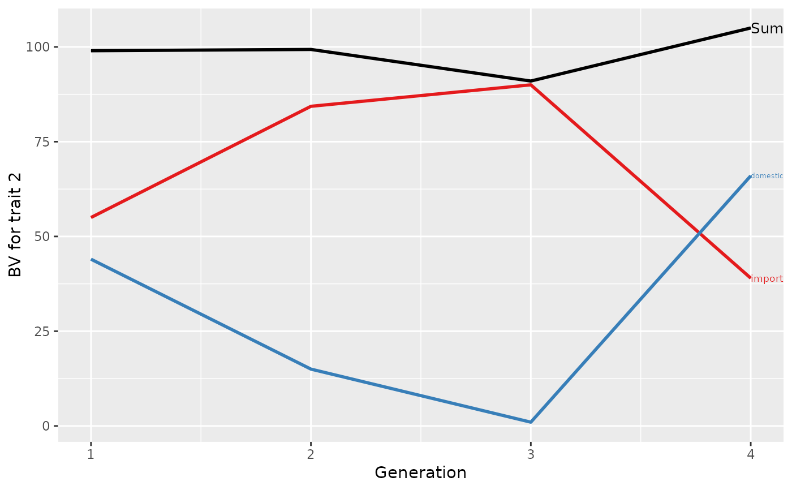
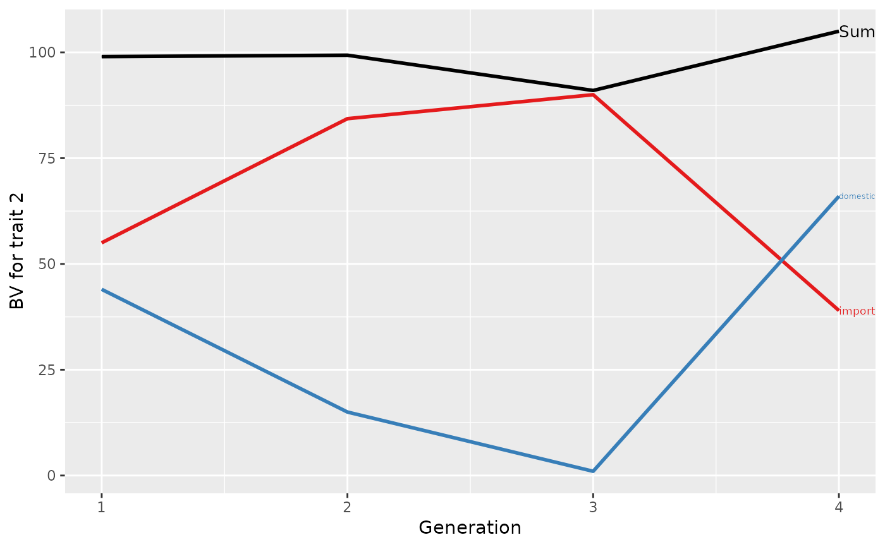

Print a plot generate by the function plotSummaryAlphaPart
print.plotSummaryAlphaPart.RdPlot output object from
plot.summaryAlphaPart.
Usage
# S3 method for class 'plotSummaryAlphaPart'
print(x, ask, ...)Arguments
- x
plotSummaryAlphaPart, output object from
plot.summaryAlphaPartfunction- ask
Logical, ask before printing another plot?
- ...
Arguments passed to other functions (not used at the moment).
Examples
## Partition additive genetic values
(res <- AlphaPart(x=AlphaPart.ped, colPath="country", colBV=c("bv1", "bv2")))
#>
#> Size:
#> - individuals: 8
#> - traits: 2 (bv1, bv2)
#> - paths: 2 (domestic, import)
#> - unknown (missing) values:
#> bv1 bv2
#> 0 0
#>
#>
#> Partitions of breeding values
#> - individuals: 8
#> - paths: 2 (domestic, import)
#> - traits: 2 (bv1, bv2)
#>
#> Trait: bv1
#>
#> IId FId MId gen country gender bv1 bv1_pa bv1_w bv1_domestic bv1_import
#> 1 A 1 domestic F 100 104.3333 -4.3333333 100.000 0.000
#> 2 B 1 import M 105 104.3333 0.6666667 0.000 105.000
#> 3 C B A 2 domestic F 104 102.5000 1.5000000 51.500 52.500
#> 4 T B 2 import F 102 52.5000 49.5000000 0.000 102.000
#> 5 D 2 import M 108 104.3333 3.6666667 0.000 108.000
#> 6 E D C 3 domestic M 107 106.0000 1.0000000 26.750 80.250
#> 7 U D 3 import F 107 54.0000 53.0000000 0.000 107.000
#> 8 V E 4 domestic F 109 53.5000 55.5000000 68.875 40.125
#>
#> Trait: bv2
#>
#> IId FId MId gen country gender bv2 bv2_pa bv2_w bv2_domestic bv2_import
#> 1 A 1 domestic F 88 99.66667 -11.666667 88 0
#> 2 B 1 import M 110 99.66667 10.333333 0 110
#> 3 C B A 2 domestic F 100 99.00000 1.000000 45 55
#> 4 T B 2 import F 97 55.00000 42.000000 0 97
#> 5 D 2 import M 101 99.66667 1.333333 0 101
#> 6 E D C 3 domestic M 80 100.50000 -20.500000 2 78
#> 7 U D 3 import F 102 50.50000 51.500000 0 102
#> 8 V E 4 domestic F 105 40.00000 65.000000 66 39
#>
## Summarize population by generation (=trend)
(ret <- summary(res, by="gen"))
#>
#>
#> Summary of partitions of breeding values
#> - paths: 2 (domestic, import)
#> - traits: 2 (bv1, bv2)
#>
#> Trait: bv1
#>
#> gen N Sum domestic import
#> 1 1 2 102.5000 50.00000 52.500
#> 2 2 3 104.6667 17.16667 87.500
#> 3 3 2 107.0000 13.37500 93.625
#> 4 4 1 109.0000 68.87500 40.125
#>
#> Trait: bv2
#>
#> gen N Sum domestic import
#> 1 1 2 99.00000 44 55.00000
#> 2 2 3 99.33333 15 84.33333
#> 3 3 2 91.00000 1 90.00000
#> 4 4 1 105.00000 66 39.00000
#>
## Plot the partitions
p <- plot(ret, ylab=c("BV for trait 1", "BV for trait 2"), xlab="Generation")
print(p[[1]])
 print(p[[2]])

#print(p)
print(p[[2]])

#print(p)